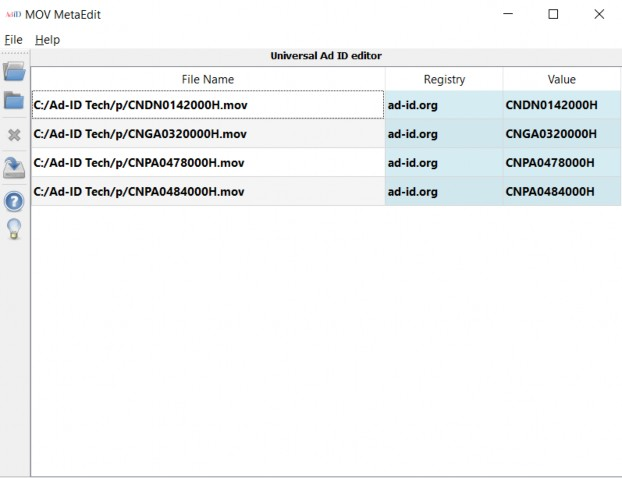
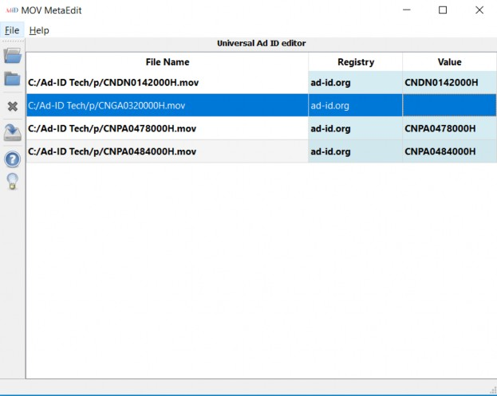
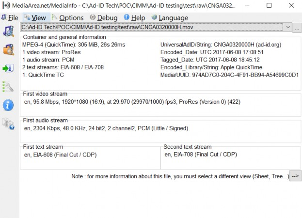
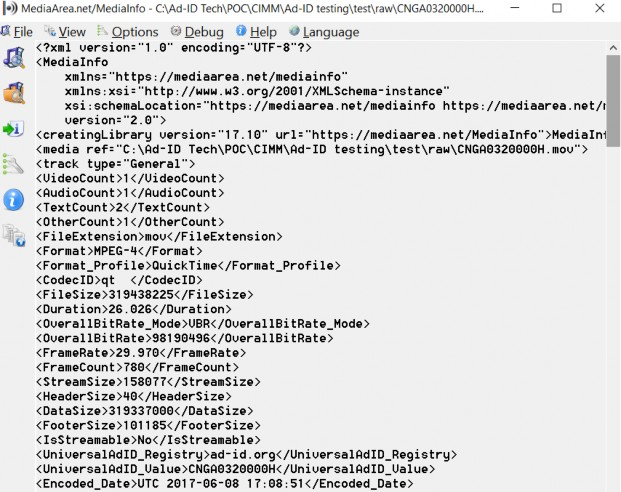
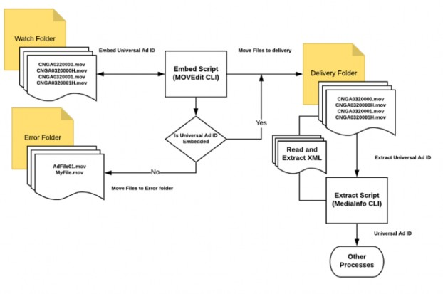

MOV MetaEdit Tool
MOV MetaEdit is a tool that supports the embedding and editing of the Universal Ad ID in a MOV (Apple QuickTime) file, supported by the AICP File Deliverable Specification (Apple ProRes 422) https://www.aicp.com/assets/editor/AICP_File_Deliverable_Specifications_Feb_2018.pdf. The Universal Ad ID consists of two name/value pairs for the name of the registry (e.g. ad-id.org) and the unique identifier (e.g. ADID0001000). A Command Line Interface (CLI) is also available.
MOV MetaEdit and CLI can be downloaded from https://mediaarea.net/MOVMetaEdit
The MOV MetaEdit tool is a Graphical User Interface (GUI) that drags & drops files and embeds the basename (no extension) as the Ad-ID. The tool also allows manual input of the two values if the file name is not in the valid Ad-ID code structure.
User interface and command line option for embedding of the Universal Ad ID into a QuickTime file format
Allows editing of the Universal Ad ID.
The QuickTime File Format Specification with custom datatype namespace or QT Metadata Atom for the UniversalAdId element
https://developer.apple.com/library/content/documentation/QuickTime/QTFF/Metada ta/Metadata.html
The UniversalAdId contains two name/value pairs for both the registry name and value of the identifier.
Idregistry – A string used to identify the name or URL for the registry where the unique creative ID is cataloged. Default: ad-id.org
Idvalue - A string for the unique identifier.
The application supports Windows/Mac/Linux.
MediaInfo – Updated to retrieve the Universal Ad ID from the user interface or the command line interface.
The filename should include a valid 11 or 12 character Ad-ID as the basename. The file name structure should be the following: ADID0001000.mov
For file names that are not in the valid Ad-ID code structure, the idregistry and idvalue will need to be manually inputted.
Universal Ad ID Namespace (Apple QuickTime Metadata Atom)
com.universaladid – universaladid Namespace
com.universaladid.idregistry – String. Name of registry. Default: ad-id.org com.universaladid.idvalue – String. Unique ID
By dragging and dropping files into the tool, the Universal Ad ID will automatically be populated if the files are named correctly. The tool also allows manual input.

The tool allows the registry and value to be edited and for manual input of empty values.

The Command Line Interface (CLI) supports automation of workflows via open source software scripts.
The filename should include a valid 11 or 12 character Ad-ID as the basename. The file name structure should be the following:
VALUE equals an Ad-ID (e.g. CNGA0320000H) or ‘auto’
Add or modify a Universal Ad ID with the specified VALUE
Use VALUE of "auto" for filling automatically from the file name (e.g. 11-12 alphanumeric characters for "ad-id.org" registry)
Ad-ID is stored with the specified VALUE as registry (default is "ad-id.org")
movmetaedit --adid auto FileName0000.mov movmetaedit --adid ADID0000000 FileName.mov
movmetaedit --adid-registry example.com --adid CNGA0320000H FileName.mov
Parsing CNGA0320000H.mov
|OK?| Registry|UniversalAdId value CNGA0320000H.mov|Yes|ad-id.org|CNGA0320000H
Display the Universal Ad ID and export as XML.
MediaInfo can be downloaded from https://mediaarea.net/en/MediaInfo
Universal Ad ID is supported as of version 17.12 of MediaInfo


Using the command line, display or extract the Universal Ad ID from XML. MediaInfo CLI can be downloaded from https://mediaarea.net/en/MediaInfo
Universal Ad ID is supported as of version 17.12 of MediaInfo
o VALUE equals ‘MIXML’ for MediaInfo XML
mediainfo -f --Output=MIXML<file name> mediainfo -f --Output=MIXML CNGA0320000H.mov
Full XML document containing the following values if the Universal Ad ID is present. Example:
<UniversalAdID_Registry>ad-id.org</UniversalAdID_Registry>
<UniversalAdID_Value>CNDN0142000H</UniversalAdID_Value>
The XML document returned can be parsed using standard XML parsing open source software. The Universal Ad ID contains 2 elements as part of the ‘MediaInfo/media/track’ XML node.
UniversalAdID_Registry – Universal Ad ID Registry UniversalAdID_Value – Universal Ad ID Value
MediaInfo->media->track->UniversalAdID_Registry MediaInfo->media->track->UniversalAdID_Value
To automate workflows, the command line tool can be used in conjunction with automated scripts to embed the Universal Ad ID and extract the values from video assets. Example workflow (see figure 1):
A simple ‘watch’ folder can be setup for new files that arrive and a script could execute to embed the Universal Ad ID using the file name.
Once embedded, the script would then move files to a ‘delivery’ folder or to an error folder if the Universal Ad ID was not embedded.
Another script could then extract the Universal Ad ID from each file in the ‘delivery’ folder and pass along the information to other workflow processes.
